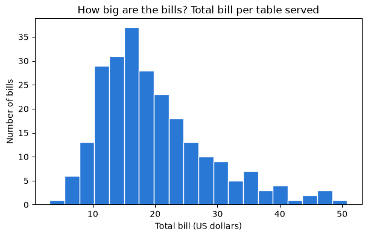
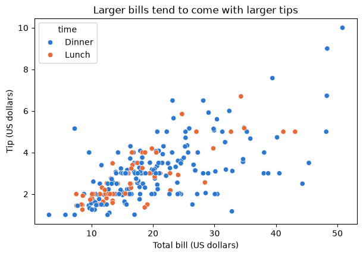

Day 1 lecture: Python and Jupyter basics¶
Learn just enough Jupyter, Python and pandas to run every notebook in this course: cells and outputs, variables and lists, loading a table, selecting, filtering and grouping, the kind of data each column holds, what one row means, and a first chart.
Open this notebook in JupyterLab from the course folder and run each cell from top to bottom with Shift + Enter.
What you will be able to do¶
- Open, run, edit, restart and export a notebook in JupyterLab.
- Use Python variables, numbers, text, lists and dictionaries, and call a function.
- Load a CSV file into a pandas DataFrame and inspect it with
head,shape,dtypesanddescribe. - Select columns, filter rows, group and count.
- Name the level of measurement of a column and choose a sensible summary for it.
- Say what one row of a table represents (its grain).
- Draw a first chart with matplotlib and seaborn.
How the course uses code
Every notebook gives you working code with explanations. You read it, run it, then change a few lines. You will not be asked to write programs from scratch.
| Part | Topic |
|---|---|
| 1 | A tour of JupyterLab |
| 2 | Python essentials |
| 3 | DataFrames with pandas |
| 4 | Data types and levels of measurement |
| 5 | What does a row mean? |
| 6 | A first chart |
Part 1: A tour of JupyterLab¶
JupyterLab is the program you use to open and run notebooks. You start it from Anaconda Navigator (click Launch under JupyterLab) or by typing jupyter lab in Anaconda Prompt (Windows) or Terminal (macOS). It opens in your web browser but runs on your computer, so it works without internet.
| Area | What it is for |
|---|---|
| File browser (left) | Open the course folder and double-click a notebook (.ipynb) |
| Notebook (centre) | A list of cells, run from top to bottom |
| Toolbar | Run, stop, restart, add cells, choose the cell type |
| Kernel (top right) | The Python process that runs your code. "Idle" means ready |
Two kinds of cell¶
| Cell type | Contains | When you run it |
|---|---|---|
| Markdown | Formatted text, like this cell | It shows as formatted text |
| Code | Python | Python runs it and shows the result underneath |
Keys worth learning today¶
| Key | Action |
|---|---|
| Shift + Enter | Run the cell and move to the next one |
| Enter | Start editing the selected cell |
| Esc | Stop editing (the cell stays selected) |
| A / B (not editing) | Add a cell above / below |
| M / Y (not editing) | Turn the cell into Markdown / Code |
| D, D (not editing) | Delete the cell |
| Ctrl + S (Cmd + S on macOS) | Save |
Run the next cell with Shift + Enter. The number in brackets on its left, [1], records the order in which cells ran.
price = 120
quantity = 3
price * quantity
360
Predict, then reveal: running cells out of order
The next cell uses
quantity. Suppose you went back up, changedquantity = 3toquantity = 10and ran only that cell, then ran the next one. Which value would the next cell use? Write your guess, then try it.
print("Quantity Python remembers right now:", quantity)
Quantity Python remembers right now: 3
Python remembers whatever ran last, not what is written higher up on the page. That is the most common source of confusion in notebooks. The cure:
Restart and run all
Choose Kernel → Restart Kernel and Run All Cells. Python forgets everything and runs the notebook from the top, in order. Do this before you export or submit any notebook, so the outputs match the code.
Exporting to PDF¶
Every graded lab is submitted as a PDF:
- Kernel → Restart Kernel and Run All Cells, and check every output and chart is visible.
- File → Print (or Ctrl + P / Cmd + P).
- In the print window, set the destination to Save as PDF. Under More settings, tick Background graphics so chart colours print.
- Save with the file name the lab asks for.
Check your understanding
You change a number in cell 3 of a notebook but forget to rerun cells 4 to 10, then export to PDF. What could be wrong in the PDF, and how do you prevent it?
Part 2: Python essentials¶
Variables and types¶
A variable is a name for a value. = stores the value under the name. Every value has a type.
store = "Shanghai West" # text: a string, inside quotes
orders = 42 # whole number: an int
average_basket = 18.75 # decimal number: a float
is_open = True # True or False: a bool
print(type(store), type(orders), type(average_basket), type(is_open))
print("Revenue estimate:", orders * average_basket)
<class 'str'> <class 'int'> <class 'float'> <class 'bool'>
Revenue estimate: 787.5
print shows several things on one line. An f-string (a string starting with f) puts values inside text, and :.2f rounds to two decimals:
print(f"{store} had {orders} orders, about {orders * average_basket:.2f} dollars in total.")
Shanghai West had 42 orders, about 787.50 dollars in total.
Lists: several values in order¶
A list holds values in square brackets. Python counts positions from 0.
monthly_sales = [120, 95, 140, 180]
print("First month:", monthly_sales[0])
print("Last month: ", monthly_sales[-1])
print("Total:", sum(monthly_sales), "| months:", len(monthly_sales))
First month: 120
Last month: 180
Total: 535 | months: 4
Dictionaries: values looked up by name¶
A dictionary pairs keys with values, inside curly brackets. A table is like a dictionary of columns.
prices = {"coffee": 3.5, "tea": 2.8, "cake": 4.2}
print("Price of tea:", prices["tea"])
prices["juice"] = 3.9 # add a new key
print("Items on the menu:", list(prices.keys()))
Price of tea: 2.8
Items on the menu: ['coffee', 'tea', 'cake', 'juice']
Calling functions and methods¶
A function does a job when you call it with brackets: len(monthly_sales), round(3.14159, 2), max(...). A method is a function that belongs to a value and is called with a dot: store.upper().
print(round(3.14159, 2))
print(max(monthly_sales))
print(store.upper())
print(sorted(prices, key=prices.get)) # menu items from cheapest to dearest
3.14
180
SHANGHAI WEST
['tea', 'coffee', 'juice', 'cake']
When something goes wrong¶
Errors are normal. Read the last line of the red message first.
| Error message | Usual cause | Fix |
|---|---|---|
NameError: name 'x' is not defined |
A cell that creates x has not run yet |
Run the earlier cells, or restart and run all |
SyntaxError |
A missing bracket, quote or comma | Look at the line the arrow points to |
KeyError: 'Tip' |
A column or key spelled differently (capital letters count) | Check the exact name, for example with df.columns |
FileNotFoundError |
The notebook is not next to the data folder |
Open the notebook from inside the course folder |
Check your understanding
What does
monthly_sales[1]return, and why not120? What type isprices["cake"]?
Part 3: DataFrames with pandas¶
pandas is the Python library analysts use for tables. A table in pandas is a DataFrame: rows and named columns, like a spreadsheet you control with code.
Our table records restaurant bills: one row per table served, with the bill, the tip, and details about the party. It comes from a well-known teaching dataset (Bryant and Smith, 1995) in which one waiter recorded every tip over a few months. Money is in US dollars.
Load and look¶
import pandas as pd
tips = pd.read_csv("data/tips.csv")
tips.head()
| total_bill | tip | sex | smoker | day | time | size | |
|---|---|---|---|---|---|---|---|
| 0 | 16.99 | 1.01 | Female | No | Sun | Dinner | 2 |
| 1 | 10.34 | 1.66 | Male | No | Sun | Dinner | 3 |
| 2 | 21.01 | 3.50 | Male | No | Sun | Dinner | 3 |
| 3 | 23.68 | 3.31 | Male | No | Sun | Dinner | 2 |
| 4 | 24.59 | 3.61 | Female | No | Sun | Dinner | 4 |
head() shows the first five rows. Next, the size of the table and the type of each column:
print("Rows and columns:", tips.shape)
print()
print(tips.dtypes)
Rows and columns: (244, 7)
total_bill float64
tip float64
sex object
smoker object
day object
time object
size int64
dtype: object
float64 means decimal numbers, int64 whole numbers, and object text.
describe() summarises every numeric column: how many values, the mean, standard deviation, minimum, quartiles and maximum.
tips.describe().round(2)
| total_bill | tip | size | |
|---|---|---|---|
| count | 244.00 | 244.00 | 244.00 |
| mean | 19.79 | 3.00 | 2.57 |
| std | 8.90 | 1.38 | 0.95 |
| min | 3.07 | 1.00 | 1.00 |
| 25% | 13.35 | 2.00 | 2.00 |
| 50% | 17.80 | 2.90 | 2.00 |
| 75% | 24.13 | 3.56 | 3.00 |
| max | 50.81 | 10.00 | 6.00 |
For text columns, describe(include="object") counts values and shows the most common one:
tips.describe(include="object")
| sex | smoker | day | time | |
|---|---|---|---|---|
| count | 244 | 244 | 244 | 244 |
| unique | 2 | 2 | 4 | 2 |
| top | Male | No | Sat | Dinner |
| freq | 157 | 151 | 87 | 176 |
Select columns¶
tips["tip"].head() # one column, as a Series
0 1.01
1 1.66
2 3.50
3 3.31
4 3.61
Name: tip, dtype: float64
tips[["day", "time", "total_bill", "tip"]].head() # several columns: a list inside the brackets
| day | time | total_bill | tip | |
|---|---|---|---|---|
| 0 | Sun | Dinner | 16.99 | 1.01 |
| 1 | Sun | Dinner | 10.34 | 1.66 |
| 2 | Sun | Dinner | 21.01 | 3.50 |
| 3 | Sun | Dinner | 23.68 | 3.31 |
| 4 | Sun | Dinner | 24.59 | 3.61 |
Filter rows¶
A condition inside the brackets keeps only the rows where it is true. Combine conditions with & (and) or | (or), each in its own brackets.
dinners = tips[tips["time"] == "Dinner"]
big_weekend = tips[(tips["day"].isin(["Sat", "Sun"])) & (tips["size"] >= 4)]
print("Dinner bills:", len(dinners))
print("Weekend parties of four or more:", len(big_weekend))
Dinner bills: 176
Weekend parties of four or more: 36
Add a column¶
New columns are calculated from existing ones, row by row. The tip as a percentage of the bill:
tips["tip_percent"] = 100 * tips["tip"] / tips["total_bill"]
tips[["total_bill", "tip", "tip_percent"]].head().round(1)
| total_bill | tip | tip_percent | |
|---|---|---|---|
| 0 | 17.0 | 1.0 | 5.9 |
| 1 | 10.3 | 1.7 | 16.1 |
| 2 | 21.0 | 3.5 | 16.7 |
| 3 | 23.7 | 3.3 | 14.0 |
| 4 | 24.6 | 3.6 | 14.7 |
Group and count¶
value_counts() counts how often each value appears. groupby splits the table into groups and summarises each one.
tips["day"].value_counts()
day
Sat 87
Sun 76
Thur 62
Fri 19
Name: count, dtype: int64
tips.groupby("day").agg(
bills=("total_bill", "count"),
average_bill=("total_bill", "mean"),
average_tip_percent=("tip_percent", "mean"),
).round(2)
| bills | average_bill | average_tip_percent | |
|---|---|---|---|
| day | |||
| Fri | 19 | 17.15 | 16.99 |
| Sat | 87 | 20.44 | 15.32 |
| Sun | 76 | 21.41 | 16.69 |
| Thur | 62 | 17.68 | 16.13 |
Each line inside agg reads: new column name = (column to use, summary to compute).
Predict, then reveal
Which is larger: the number of lunch bills or dinner bills? Guess from what you know about restaurants, then change
"day"to"time"in thevalue_counts()cell above and run it.Check your understanding
Write the code that keeps only bills from smokers (
smokeris"Yes") and computes their averagetip_percent. Which two ideas from this part do you combine?
Part 4: Data types and levels of measurement¶
The type pandas shows (int64, object) is about how a value is stored. The level of measurement is about what it means, and it decides which calculations make sense.
| Level | What the values do | Examples | What makes sense |
|---|---|---|---|
| Nominal | Name a group; no order | Sex, smoker, product ID, postcode | Count, share, mode |
| Ordinal | Name a group in order; gaps not equal | Shirt size, satisfaction 1–5 | + median, "higher than" |
| Interval | Ordered with equal gaps; zero is arbitrary | Temperature in °C, calendar dates | + differences, mean |
| Ratio | Equal gaps and a true zero | Bill, tip, party size, age | + ratios: "twice as much" |
Nominal and ordinal variables are categorical. Interval and ratio variables are numeric (quantitative).
The columns of the tips table:
| Column | Stored as | Level | A sensible summary |
|---|---|---|---|
total_bill, tip |
float64 |
Ratio | Mean, median, total |
size |
int64 |
Ratio (a count of people) | Mean, median, counts per size |
sex, smoker, time |
object |
Nominal | Counts and shares |
day |
object |
Nominal, or ordinal if you care about the order of days | Counts; sort in real day order |
Predict, then reveal: numbers that are not quantities
pandas sorts text alphabetically. In what order will the days appear in the next cell? Is that the order you want in a report?
print("Alphabetical:", sorted(tips["day"].unique()))
day_order = ["Thur", "Fri", "Sat", "Sun"]
tips["day"] = pd.Categorical(tips["day"], categories=day_order, ordered=True)
print("Real order: ", list(tips["day"].cat.categories))
tips["day"].value_counts(sort=False)
Alphabetical: ['Fri', 'Sat', 'Sun', 'Thur']
Real order: ['Thur', 'Fri', 'Sat', 'Sun']
day
Thur 62
Fri 19
Sat 87
Sun 76
Name: count, dtype: int64
An ordered categorical keeps the real order, so tables and charts list Thursday to Sunday.
Remember
An ID or postcode stored as a number is still nominal: its average means nothing. Always ask what a column means before you average it.
Check your understanding
A survey stores satisfaction as 1, 2, 3, 4 or 5 in an
int64column. Which level is it? Why is "the share scoring 4 or 5" safer to report than the mean?
Part 5: What does a row mean?¶
The grain of a table is what one row represents. Here: one table's bill on one visit, served by one waiter. Grain decides what counting means:
len(tips)counts bills (tables served), not customers.- The number of customers is the sum of
size, because each row is a party.
print("Bills (rows): ", len(tips))
print("Customers (sum of size): ", tips["size"].sum())
Bills (rows): 244
Customers (sum of size): 627
The table has no ID column, so nothing guarantees that each row is a different bill.
Predict, then reveal
Do you expect any row to appear twice, with every value identical? If one does, is it a mistake?
print("Fully duplicated rows:", tips.duplicated().sum())
tips[tips.duplicated(keep=False)]
Fully duplicated rows: 1
| total_bill | tip | sex | smoker | day | time | size | tip_percent | |
|---|---|---|---|---|---|---|---|---|
| 198 | 13.0 | 2.0 | Female | Yes | Thur | Lunch | 2 | 15.384615 |
| 202 | 13.0 | 2.0 | Female | Yes | Thur | Lunch | 2 | 15.384615 |
Two different parties could really have had the same bill, tip, day and size. Without an ID (a primary key) we cannot tell a genuine repeat from a double entry, so we keep the row and note it. Deleting data needs evidence.
Grain also limits what you can conclude
All these bills come from one waiter in one restaurant. They describe that waiter's tips, not tipping in general.
Check your understanding
A sales table has one row per product within an order. Why does
len(sales)not give the number of orders? Which pandas method would?
Part 6: A first chart¶
A chart needs a title, labelled axes with units, and ends with plt.show().
A histogram shows how one numeric column is spread out: how many bills fall into each range of values.
import matplotlib.pyplot as plt
fig, ax = plt.subplots(figsize=(7, 4))
ax.hist(tips["total_bill"], bins=20, color="#2a78d6", edgecolor="white")
ax.set_title("How big are the bills? Total bill per table served")
ax.set_xlabel("Total bill (US dollars)")
ax.set_ylabel("Number of bills")
plt.show()

seaborn builds on matplotlib and makes charts of a DataFrame in one call. A scatter plot shows two numbers for each row; hue colours the dots by a category.
import seaborn as sns
fig, ax = plt.subplots(figsize=(7, 4.5))
sns.scatterplot(
data=tips, x="total_bill", y="tip", hue="time",
palette={"Lunch": "#eb6834", "Dinner": "#2a78d6"}, ax=ax,
)
ax.set_title("Larger bills tend to come with larger tips")
ax.set_xlabel("Total bill (US dollars)")
ax.set_ylabel("Tip (US dollars)")
plt.show()

Check your understanding
- The histogram title asks a question. Write a better title that states the main message of the chart in one sentence.
- In the scatter plot, what does one dot represent? (Hint: the grain.)
Quick reference¶
| You want to… | Code |
|---|---|
| Load a CSV file | df = pd.read_csv("data/file.csv") |
| See the first rows / size / types | df.head() / df.shape / df.dtypes |
| Summary statistics | df.describe() |
| One column / several columns | df["tip"] / df[["day", "tip"]] |
| Filter rows | df[df["time"] == "Dinner"] |
| New column | df["tip_percent"] = 100 * df["tip"] / df["total_bill"] |
| Count values | df["day"].value_counts() |
| Summary per group | df.groupby("day").agg(average_tip=("tip", "mean")) |
| Duplicated rows | df.duplicated().sum() |
| Histogram / scatter plot | plt.hist(...) / sns.scatterplot(data=df, x=..., y=...) |
Summary¶
- A notebook is cells run in order. Restart and run all before you export; export with File → Print → Save as PDF.
- Python stores values in variables; lists hold values in order, dictionaries by name; functions are called with brackets.
- A DataFrame is a table: inspect it with
head,shape,dtypes,describe; select, filter, group and count with one line each. - Storage type is not meaning. Name the level of measurement before choosing a summary.
- Know the grain before you count anything.
Quiz¶
- What does Shift + Enter do, and what does the number in
[ ]beside a cell tell you? - What is the difference between
tips["tip"]andtips[["tip"]]? - Which code gives the average tip for each value of
time? - Is
sizein the tips table nominal, ordinal, interval or ratio? Why? - What does one row of the tips table represent, and how do you count customers?
In the lab¶
The Activity 1 lab uses exactly these skills on a new table, the Palmer Penguins, and then checks that Tableau is ready.